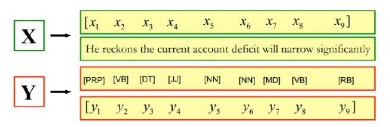

前言
本文是我在学习苏州大学李正华老师的中文信息处理课程（中文信息处理（Chinese Information Processing）Course Resources）时，对于隐马尔可夫模型的一些个人见解和思考，同时参考了一些书籍和网上的资料编写而成。写这篇文章的主要目的是加深自己对于该模型的理解，如有错误欢迎在评论区指出，非常感谢！
从问题出发
隐马尔可夫模型是一个序列化标注模型，也能被看作是一种seq2seq模型。在对隐马尔可夫模型进行学习时，我们引入一个自然语言处理领域的经典序列化问题：词性标注任务。接下来的讲解中，将围绕这个问题进行讨论。
- 给定一个句子X，输出句子中每一个单词对应的词性。

什么是隐马尔可夫模型
《统计学习方法》中对于隐马尔可夫模型有着如下的定义：
隐马尔科夫是关于时序的概率模型，描述由一个隐藏的马尔科夫链随机生成不可观测的状态随机序列，再由各个状态生成一个观测而产生观测随机序列的过程，隐藏的马尔科夫链生成的随机状态的序列被称为状态序列(state sequence)，每个状态生成一个观测，由此而产生的观测的随机序列，称之为观测序列(observation sequence) ,序列的每一个位置都可以看作是一个时刻。
上述定义初看比较晦涩难懂，我们需要逐步进行解释。
首先，什么是观测序列和状态序列呢？观测序列通常指可以直接获得的序列，状态序列则是我们无法直接获得的序列，HMM模型的目的就是为了通过可观测到的数据，预测不可观测到的数据。我们结合词性标注问题来看，在此问题中，观测序列指的是句子的单词序列，而状态序列则指的是句子的词性序列。
那么，什么是马尔可夫链？马尔可夫链是具有马尔可夫性质的随机变量的一个数列，描述了一个状态序列。马尔可夫性质指的是每个状态值取决于前面有限个状态，这在HMM模型中称为齐次马尔科夫链假设。需要注意的是马尔可夫链并没有限定后一个状态的变化仅仅取决于前一个状态，而是说取决于前面有限个状态。不过为了简化模型，我们在HMM中使用一阶（二元）马尔可夫链，即每个状态仅依赖于前一个状态。带入到词性标注问题中，他指的是当前的词性仅依赖于前一个词性是什么。例如，动词后常接名词，很少再接一个动词。那么，根据齐次马尔科夫链假设，如果前一个词性是动词，我们可以推测出当前词倾向于是名词而非动词。
接下来，我们要解决的问题是观测序列如何生成状态序列。HMM模型中对于状态序列至观测序列的发射有着这样的假设：任意时刻的观察状态只仅仅依赖于当前时刻的隐藏状态。这也叫做观测独立性假设，与齐次马尔科夫链假设一样，它也是为了简化模型。带入到词性标注问题中，它指的是当前词仅与当前词性有关。举例来说，当给定一个词“苹果”，我们根据训练集统计得知名词词性发射至“苹果”的概率远大于其它词性，所以我们可以预测当前词倾向于是名词。
根据齐次马尔可夫假设和观测独立性假设，对于一个长度为$L$的句子，我们用$X=x(0),x(1)……x(L-1)$表示词序列（观测序列），$Y=y(0),y(1)…y(L-1)$表示词性序列（状态序列），那么词性序列的转移过程可以表示为：
$$
p(y_i|y_0…y_i-1)=p(y_i|y_i-1)（一阶马尔可夫性质）
$$
由词性序列$Y$产生词序列$X$的发射过程可以表示为：
$$
p(x_0…x_L|y_0…y_L)= \prod_{i=0}^L{p(x_i|y_i)}(观测独立性假设)
$$
这里，我们补充一个HMM的例子：
例子：病情转化
假设：某一时刻只有一种疾病，且只依赖于上一时刻疾病，一种疾病只有一种症状，且只依赖于当时的疾病
症状（观察值）：发烧，咳嗽，咽喉肿痛，流涕
疾病（状态值）：感冒，肺炎，扁桃体炎，猝死
转移概率：从一种疾病转变到另一种疾病的概率
输出概率：某一疾病呈现出某一症状的概率
初始分布：初始疾病的概率
生成模型OR判别模型
- 由生成方法学习到的模型称之为生成模型，生成方法是由数据学习联合分布$P(X,Y)$，然后求出条件概率分布$P(Y∣X)$作为预测的模型：
$$
P(Y∣X)=\frac{P(X,Y)}{P(X)}
$$
典型的生成模型有：朴素贝叶斯模型，隐马尔可夫模型，生成对抗网络（GAN），变分自编码器（VAE）。
- 由判别方法学习到的模型称之为判别模型，判别方法是由数据直接学习决策函数或者条件概率分布$P(Y∣X) $作为预测的模型。典型的判别模型有：k近邻模型，感知机模型，决策树，逻辑回归模型，最大熵模型，支持向量机，提升方法和条件随机场等。
- 总结： 生成模型是指对联合概率建模，判别模型是对条件概率建模 ，HMM模型属于生成模型。
隐马尔可夫模型的三个参数：
简单来说，HMM模型主要使用了两个特征，分别是发射特征（词性到词的概率）和转移特征（前一个词性到当前词性的概率）。特别的，我们还会引入第三个特征，即初始特征，它主要指的是句子中第一个词性是什么的概率。它本质上来说仍然是一个转移特征，只不过是从第0个词性（也就是空）转移而来。
在实际参数学习过程中，这三个特征都是以矩阵的形式存储。
为了简化模型，HMM定义了两个假设，即我们前面提到的齐次马尔可夫假设和观测独立性假设，根据前者，我们使用了转移特征和初始特征，根据后者，我们使用了发射特征。实际上，这也正是HMM模型的缺陷，由于这两个强力的假设，导致其只能使用三类特征，无法考虑句子中的更多信息。在我的接下来的文章中，将探讨线性模型和对数线性模型，他们虽然无法解决序列标注问题，但是能够无限制的使用特征。特别的，CRF结合了LR模型与HMM模型的优点，实现了可以使用无限制的特征模板进行序列化标注。
隐马尔可夫模型的五个要素
总结一下，隐马尔可夫模型的核心就是五个要素：
- 两个序列：
- 观测序列：词序序列
- 状态序列：词性序列
- 三个矩阵：
- 初始概率矩阵：第一个词性的概率，实际上是一个一维向量
- 发射概率矩阵：词性发射到词的概率，维度为[训练集中的词性数,训练集中的词数]
- 状态转移概率矩阵：从一个词性变化到另一个词性的概率，维度为[训练集中的词性数,训练集中的词性数]
隐马尔可夫模型解决序列标注问题的过程
- 训练过程：利用训练数据，统计得到HMM模型的三个参数，也就是上一节提到的三个矩阵。主要的方法有：极大似然估计法（有监督学习）和
- 。 Baum-Welch算法（无监督学习）。
- 预测过程：给定一个句子的词序列，通过我们训练好的模型预测出最有可能的词性序列。主要的方法为维特比算法。
隐马尔可夫模型的训练过程
极大似然估计法（有监督学习）
机器学习中，有监督学习指的是训练数据给出了标签。在词性标注问题中，即指的是训练数据给出了词性序列。
在有监督学习的参数学习过程中， 参数的计算频率近似于参数的概率 ，我们可以利用极大似然估计法进行证明。具体证明的过程参考李老师的讲义 HMM模型中极大似然估计的由来 。通过对训练数据进行统计，我们便可计算出模型的三个基本参数矩阵，并可以使用他们进行预测。
具体的训练过程如下：
- 统计状态的概率分布，也就是初始概率矩阵pi
参考资料（部分）
李航老师的《统计学习方法》第10章